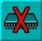

This is a powerful control button, and care should be taken when using it!
This is a powerful control button, and care should be taken when using it!The highlighted sample is totally erased from the sample bank, and it can not be recovered.
Delete a sample
This is a powerful control button, and care should be taken when using it!
The highlighted sample is totally erased from the sample bank, and it can not be recovered.
Clear sample bank

To clear the entire sample bank, use this button.
Again, it must be emphasised that once
the samples in the bank have been erased from memory, they cannot be recovered.
Always keep back-up copies of your samples on another disc.
Save As
 To save the edited sample bank with a new identity onto disc, the [Save As] option
should be used.
To save the edited sample bank with a new identity onto disc, the [Save As] option
should be used.
After a prompt, you can type in the new name for the bank, which will
appear above the sample bank window.
Save bank
 If you do not need to change the name of the bank, simply trigger the [Save Bank]
button,
If you do not need to change the name of the bank, simply trigger the [Save Bank]
button,
and it will be saved to the current disc.
Quit
 To leave the Sample Bank Maker, use the [QUIT] button, which is at the top of the
screen, and you will be returned to the familiar AMOS Professional Edit Screen.
To leave the Sample Bank Maker, use the [QUIT] button, which is at the top of the
screen, and you will be returned to the familiar AMOS Professional Edit Screen.